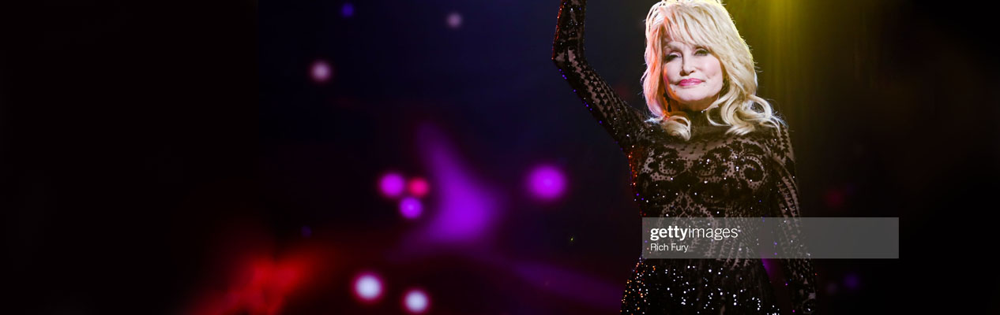
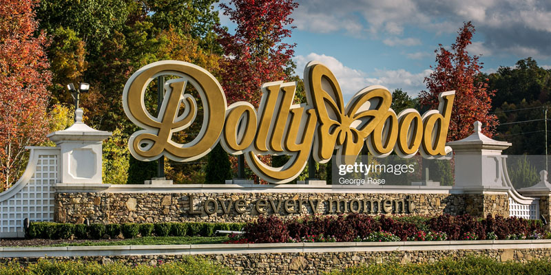

Founded in 1995, Dolly Parton’s Imagination Library is a free book gifting program to children up to the age of five years.
This means they receive one book every month to the age of five.
Dolly (2020) says
“ I created the Imagination Library as a tribute to my Daddy.
He was the smartest man I have evet known but I know in my heart his inability to read probably kept him from fulfilling all of his dreams”.
The program is currently running in:
In 2016, the Imagination library was sending 1 million books every month!
This figure is surely exceeding this has they have expanding to Ireland since then.
In 2018, the Imagination Library hit the 100 millionth book! Now that is a library!
To find out more and sign up, visit here

As well as being a successful musician and a philanthropist, Dolly also has other business ventures including Dollywood.
Dollywood is a theme park situated on 160 acres near the Great Smoky Mountains.
It comprises of a theme park, water park, spa, log cabin and hotel accommodation with lots to do for all ages!
It hosts more than 2.7 million visitors every year and is the largest employer in Sevier County, Tennessee.
It has won many awards since its opening back in 1986.
It was named a Top Three U.S theme park by USA Today readers in 2014 and 2017.
It has also been named a top 20 theme park worldwide by TripAdvisor in 2015, 2018 and 2019.
To explore more and book you’re next trip, visit here